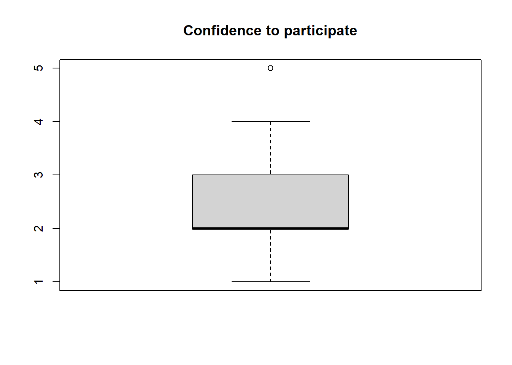
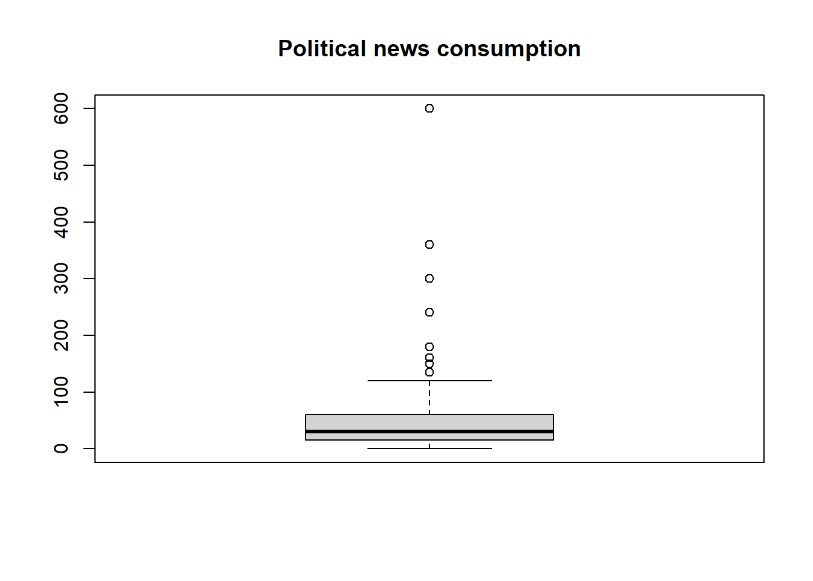
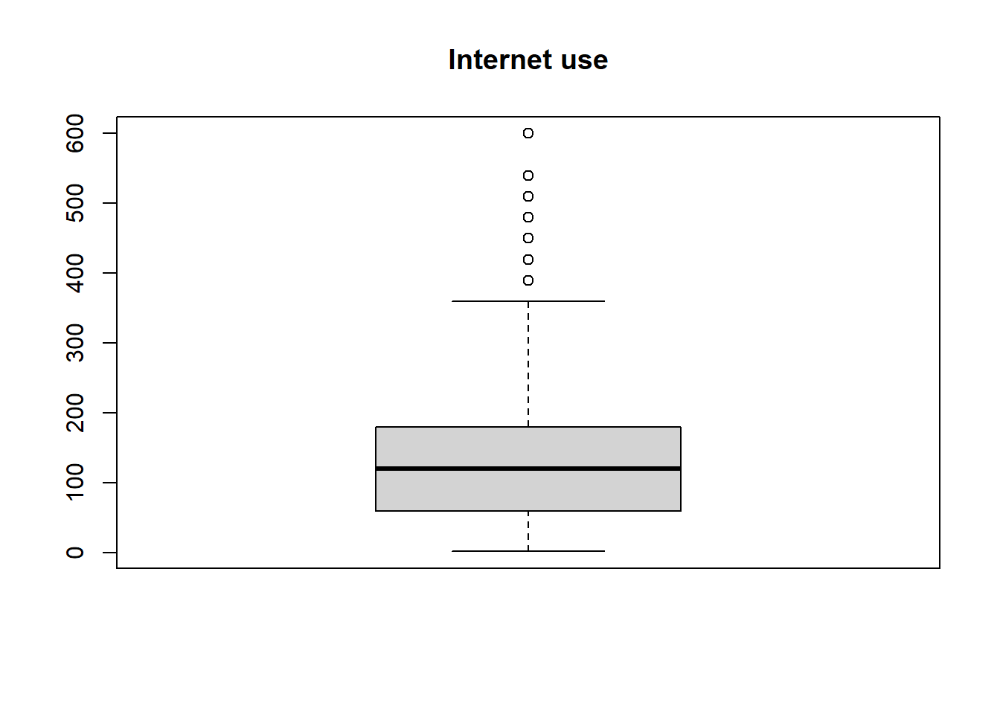
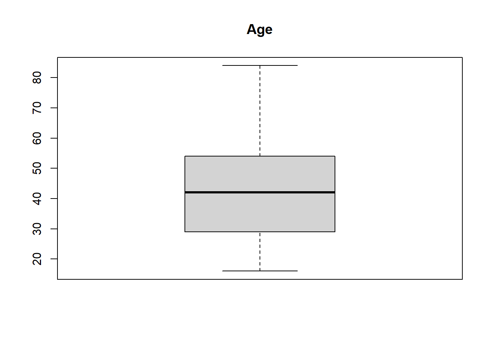

##check working directory
getwd()[1] "C:/Users/antje/Documents/studium PUK/Master-Publizistik/STUDIENASSISTENZ/Test Tutorial"As always, we first check with “getwd()” under which path our working directory is. All scripts and data sets we want to work with should be placed in this folder.
##check working directory
getwd()[1] "C:/Users/antje/Documents/studium PUK/Master-Publizistik/STUDIENASSISTENZ/Test Tutorial"Then we load the necessary R packages again with the “pacman” package.
##install and load packages
if (!require("pacman")) {install.packages("pacman"); library(pacman)}Lade nötiges Paket: pacmanp_load(tidyverse, car, lmtest, QuantPsyc)For this exercise we again use the data set from the European Social Survey: ESS Round 8 (2016): integrated file, edition 2.2, to be found at: https://ess-search.nsd.no/en/study/f8e11f55-0c14-4ab3-abde-96d3f14d3c76
We continue to work with the filtered data set from Exercise 5, which contains the following variables for the Austrian respondents: Gender (gndr), Age of respondent calculated (agea), News about politics and current affairs (nwspol), Internet use (netustm), Confident in own ability to participate (cptppola).
#load dataset
df <- read.csv("ESS8e02_2_AT.csv")#inspect dataset
glimpse(df)
class(df)
head(df)
View(df)We calculate a multivariate regression with the following IVs: Gender (gndr), Age of respondent calculated (agea), News about politics and current affairs (nwspol), Internet use (netustm). Our DV is: Confident in own ability to participate (cptppola).
With the code below, which you know from the previous exercises, we define our IV and DV and assign the associated labels.
#define IV and DV
df$iv1 <- df$nwspol
df$iv2 <- df$netustm
df$iv3 <- df$gndr
df$iv4 <- df$agea
df$dv <- df$cptppola
#distribute labels
label_iv1 <- "Political news consumption"
label_iv2 <- "Internet use"
label_iv3 <- "Gender"
label_iv4 <- "Age"
label_dv <- "Confidence to participate"
glimpse(df)Rows: 2,010
Columns: 12
$ X <int> 1, 2, 3, 4, 5, 6, 7, 8, 9, 10, 11, 12, 13, 14, 15, 16, 17, 18…
$ idno <int> 1, 2, 4, 6, 10, 11, 12, 13, 14, 15, 16, 17, 18, 19, 21, 22, 2…
$ gndr <int> 2, 1, 2, 1, 2, 2, 2, 2, 2, 2, 2, 1, 1, 2, 2, 1, 1, 1, 2, 2, 2…
$ agea <int> 34, 52, 68, 54, 20, 65, 52, 44, 22, 41, 57, 61, 50, 31, 58, 2…
$ nwspol <int> 120, 120, 30, 30, 30, 60, 15, 45, 10, 60, 30, 90, 15, 30, 20,…
$ netustm <int> 180, 120, 6666, 120, 180, 120, 6666, 30, 120, 120, 6666, 90, …
$ cptppola <int> 3, 3, 2, 4, 1, 2, 1, 2, 2, 2, 1, 3, 1, 2, 1, 2, 4, 3, 1, 2, 1…
$ iv1 <int> 120, 120, 30, 30, 30, 60, 15, 45, 10, 60, 30, 90, 15, 30, 20,…
$ iv2 <int> 180, 120, 6666, 120, 180, 120, 6666, 30, 120, 120, 6666, 90, …
$ iv3 <int> 2, 1, 2, 1, 2, 2, 2, 2, 2, 2, 2, 1, 1, 2, 2, 1, 1, 1, 2, 2, 2…
$ iv4 <int> 34, 52, 68, 54, 20, 65, 52, 44, 22, 41, 57, 61, 50, 31, 58, 2…
$ dv <int> 3, 3, 2, 4, 1, 2, 1, 2, 2, 2, 1, 3, 1, 2, 1, 2, 4, 3, 1, 2, 1…Next, using the “Recode” function, we define the missing/invalid values as “NA”. In order to identify these values, we look at the code book which came with the data.
#recode missing values
df$iv1 <- Recode((df$iv1),
'7777 = NA; 8888 = NA; 9999 = NA')
df$iv2 <- Recode((df$iv2),
'6666= NA; 7777 = NA; 8888 = NA; 9999 = NA')
df$iv3 <- Recode((df$iv3),
'9 = NA')
df$iv4 <- Recode((df$iv4),
'999 = NA')
df$dv <- Recode((df$dv),
'7 = NA; 8 = NA; 9 = NA')
glimpse(df)Rows: 2,010
Columns: 12
$ X <int> 1, 2, 3, 4, 5, 6, 7, 8, 9, 10, 11, 12, 13, 14, 15, 16, 17, 18…
$ idno <int> 1, 2, 4, 6, 10, 11, 12, 13, 14, 15, 16, 17, 18, 19, 21, 22, 2…
$ gndr <int> 2, 1, 2, 1, 2, 2, 2, 2, 2, 2, 2, 1, 1, 2, 2, 1, 1, 1, 2, 2, 2…
$ agea <int> 34, 52, 68, 54, 20, 65, 52, 44, 22, 41, 57, 61, 50, 31, 58, 2…
$ nwspol <int> 120, 120, 30, 30, 30, 60, 15, 45, 10, 60, 30, 90, 15, 30, 20,…
$ netustm <int> 180, 120, 6666, 120, 180, 120, 6666, 30, 120, 120, 6666, 90, …
$ cptppola <int> 3, 3, 2, 4, 1, 2, 1, 2, 2, 2, 1, 3, 1, 2, 1, 2, 4, 3, 1, 2, 1…
$ iv1 <int> 120, 120, 30, 30, 30, 60, 15, 45, 10, 60, 30, 90, 15, 30, 20,…
$ iv2 <int> 180, 120, NA, 120, 180, 120, NA, 30, 120, 120, NA, 90, 90, 18…
$ iv3 <int> 2, 1, 2, 1, 2, 2, 2, 2, 2, 2, 2, 1, 1, 2, 2, 1, 1, 1, 2, 2, 2…
$ iv4 <int> 34, 52, 68, 54, 20, 65, 52, 44, 22, 41, 57, 61, 50, 31, 58, 2…
$ dv <int> 3, 3, 2, 4, 1, 2, 1, 2, 2, 2, 1, 3, 1, 2, 1, 2, 4, 3, 1, 2, 1…For further analysis, we exclude the cases with missing values. We achieve this by using the “drop_na” function, which we apply to all variables, IVs and DV. Thus, all cases that have missing values in one of the IVs or the DV are excluded.
#Exclude cases with missing values
df <- drop_na(df, iv1, iv2, iv3, iv4, dv)To get a first impression of the data distributions, we create boxplots for the DV and the metric IVs.
Question: Do all variables have the necessary level of measurement?
boxplot(df$dv, main = label_dv)
boxplot(df$iv1, main = label_iv1)
boxplot(df$iv2, main = label_iv2)
boxplot(df$iv4, main = label_iv4)
To perform the regression, we use the “lm” (linear model) function again, and assign it to an object which we call “model”. We insert the DV before the tilde and the IVs after the tilde, combine the several IVs with a plus sign, and refer to “df” as data . Then we apply the “summary” function to the “model” object. This gives us the summary of the results.
model <- lm(dv ~ iv1 + iv2 + iv3 + iv4, data = df)
summary(model)
Call:
lm(formula = dv ~ iv1 + iv2 + iv3 + iv4, data = df)
Residuals:
Min 1Q Median 3Q Max
-2.9877 -0.7257 -0.2478 0.5919 2.9247
Coefficients:
Estimate Std. Error t value Pr(>|t|)
(Intercept) 2.4163172 0.1580430 15.289 < 2e-16 ***
iv1 0.0028113 0.0005986 4.696 2.96e-06 ***
iv2 0.0010902 0.0002993 3.642 0.000282 ***
iv3 -0.2232765 0.0648992 -3.440 0.000601 ***
iv4 0.0057773 0.0022382 2.581 0.009964 **
---
Signif. codes: 0 '***' 0.001 '**' 0.01 '*' 0.05 '.' 0.1 ' ' 1
Residual standard error: 1.117 on 1202 degrees of freedom
Multiple R-squared: 0.051, Adjusted R-squared: 0.04784
F-statistic: 16.15 on 4 and 1202 DF, p-value: 6.878e-13The output corresponds to that of the simple regression analysis. In the table of coefficients we now find the corresponding values for all our IVs listed: in the first column the unstandardized B-coefficients, then the standard errors, t-values and the corresponding p-values, which tell us whether the regression coefficients are significant.
Below the table we find further information on the standard error of the residuals, the quality of the model (R squared) and the F statistic for the associated regression model. Here we are particularly interested in the information on R-squared, which tells us how much of the variance in the DV is explained by our regression model. As a reminder, we always report the corrected R-squared!
Question: How do you interpret the multiple regression results?
In order to meaningfully compare multiple regression coefficients, we need to standardize them. We obtain standardized regression coefficients (beta coefficients) using the “lm.beta” function from the QuantPsyc package. We apply these to our regression model.
lm.beta(model) iv1 iv2 iv3 iv4
0.13614745 0.10445170 -0.09737764 0.07636543 The beta coefficients indicate changes in standard deviations and usually range between -1 and +1. They indicate the influence of the IV on our DV, adjusted for the influence of the other IVs. We can interpret them like correlation coefficients (< 0.1 no influence, 0.1 - 0.3 weak, 0.3 - 0.5 moderate, > 0.5 strong).
IV1 is our strongest predictor with β = 0.14, p < 0.001. Political news consumption thus has a weak, positive influence on confidence in one’s own ability to participate. This is followed by IV2 (Internet use) with β = 0.10, p < 0.001. The two demographic variables gender (IV3) and age (IV4) also have a significant but even weaker influence.
Caution! Since gender is a dichotomous variable, we have to take this into account in the interpretation. From the code book for the data set we can see that 1 = male and 2 = female. The negative sign means that men rate their own ability to participate a little bit higher, keeping all other factors constant.
We now check the assumptions using the diagnostic plots as in Exercise 5.
How do you interpret the plots in terms of:
-Homoscedasticity? -Normal distribution of the residuals? -Outliers?
plot(model)


In addition, we can perform the tests for homoscedasticity (Breuch-Pagan test) and normal distribution (Shapiro-Wilk) of the residuals.
bptest(model)
studentized Breusch-Pagan test
data: model
BP = 44.743, df = 4, p-value = 4.497e-09#Breusch-Pagan test for homoscedasticity
shapiro.test(residuals(model))
Shapiro-Wilk normality test
data: residuals(model)
W = 0.97109, p-value = 8.488e-15#Test for normal distribution of the residualsBoth tests are significant, i.e. the two assumptions of homoscedasticity and normal distribution of the residuals are violated. Now, we can either report the results of the regression analysis with reference to the robustness of the regression analysis to violations of its assumptions, or we additionally run bootstrapping (for a detailed explanation of the code below and the interpretation of the output, see Exercise 5).
#Alternative: Bootstrapping!
bootReg <- Boot(model, R=2000)
summary(bootReg)
Number of bootstrap replications R = 2000
original bootBias bootSE bootMed
(Intercept) 2.4163172 1.6690e-03 0.16266233 2.4193175
iv1 0.0028113 1.4693e-04 0.00111000 0.0028204
iv2 0.0010902 -8.8141e-08 0.00030303 0.0010930
iv3 -0.2232765 -1.7396e-03 0.06696758 -0.2261689
iv4 0.0057773 -8.5047e-05 0.00232426 0.0057150confint(bootReg, level = 0.95)Bootstrap bca confidence intervals
2.5 % 97.5 %
(Intercept) 2.0848335775 2.725009795
iv1 0.0010894147 0.005266661
iv2 0.0004771689 0.001672889
iv3 -0.3536927257 -0.084421519
iv4 0.0011755799 0.010500545In the interpretation we focus on the confidence intervals of the bootstrapping. What do you notice?
In multiple regression, there is another requirement that we need to check, and that is that the IVs should be as independent from one another as possible, i.e., they should not strongly correlate with each other.
Multicollinearity is the occurrence of a high correlation between two or more independent variables in a multiple regression model. This is undesirable, because it makes it difficult to separate the effects of different variables from each other. This leads to uncertain and biased estimates of the regression coefficients.
To test for multicollinearity, we calculate the variance inflation factor (VIF) for the IVs. To do this, we use the “vif” function from the “car” package.
vif(model) iv1 iv2 iv3 iv4
1.064572 1.041535 1.014727 1.108661 The VIF value indicates whether a predictor has a strong linear relationship with the other predictors. The smallest possible VIF value is 1 (no multicollinearity). As a rule of thumb, a VIF above 5 or 10 is problematic.
Our VIF values are all close to 1, meaning there is no multicollinearity.
Chapter 7 in: Fields, A. (2012). Discovering Statistics Using R. Sage.
Now it’s your turn!
#Filter data and select variables#Recode missing values
#Remove missing values
#Define IVs and DVAnswer: …
#Multiple regression
#Standardized regression coefficientsAnswer: …
#Multiple Regression
#Standardzed regression coefficientsAnswer:…
#Analysis of the residualsAnswer: …
#Check multicollinearityImportant! Save the customized Markdown with a filename like this: Last_Name_Exercise6.Rmd Upload this file to the designated folder in Moodle.